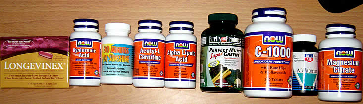

Easily distracted? myEggTimer user, Macie, says:
Here's a little trick I have found that helps me. I use an online egg timer and do small 5 to 10 minute jobs. Go to myeggtimer.com
Its a great way to get things done.
There is also the classic, Getting Things Done (Paperback).
Set up multiple reminders to take all your vitamins.

2 to 3 minutes for soft-boiled eggs or 10 to 15 minutes for hard-boiled eggs.
Read more at "How to Boil an Egg" by eHow.com. Wikipedia explains the difference: soft boil vs. hard boil.